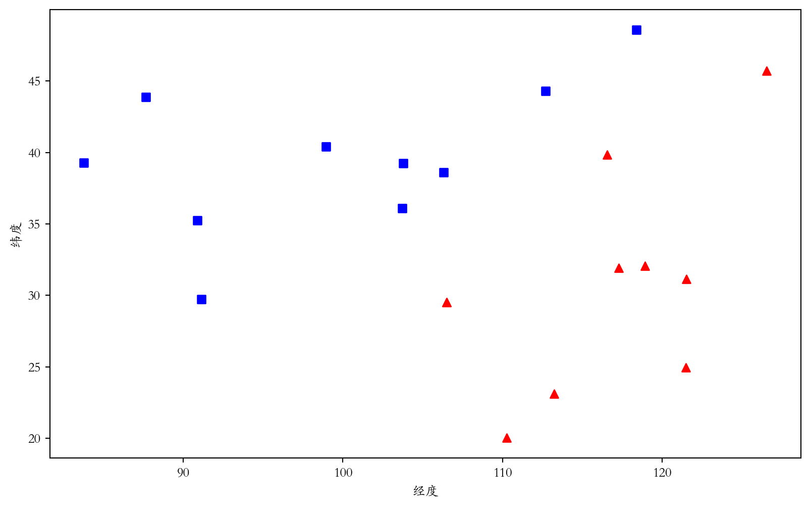
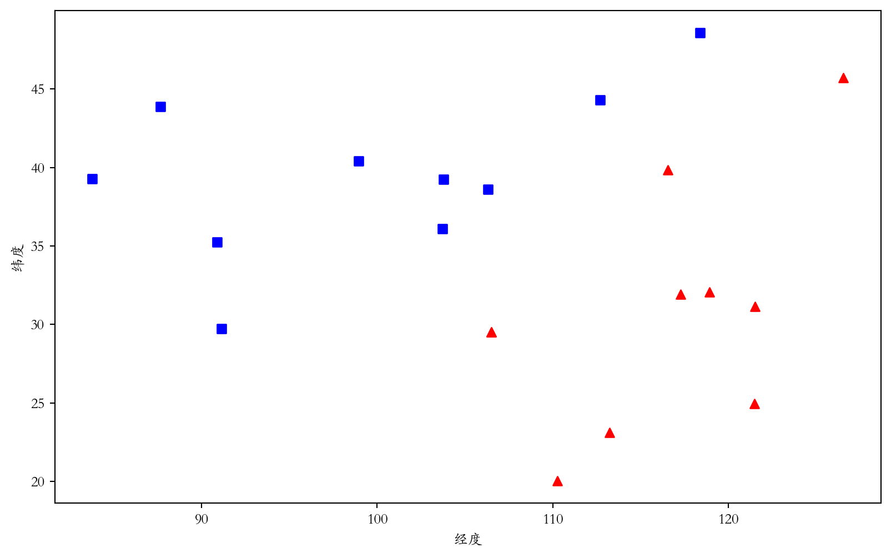
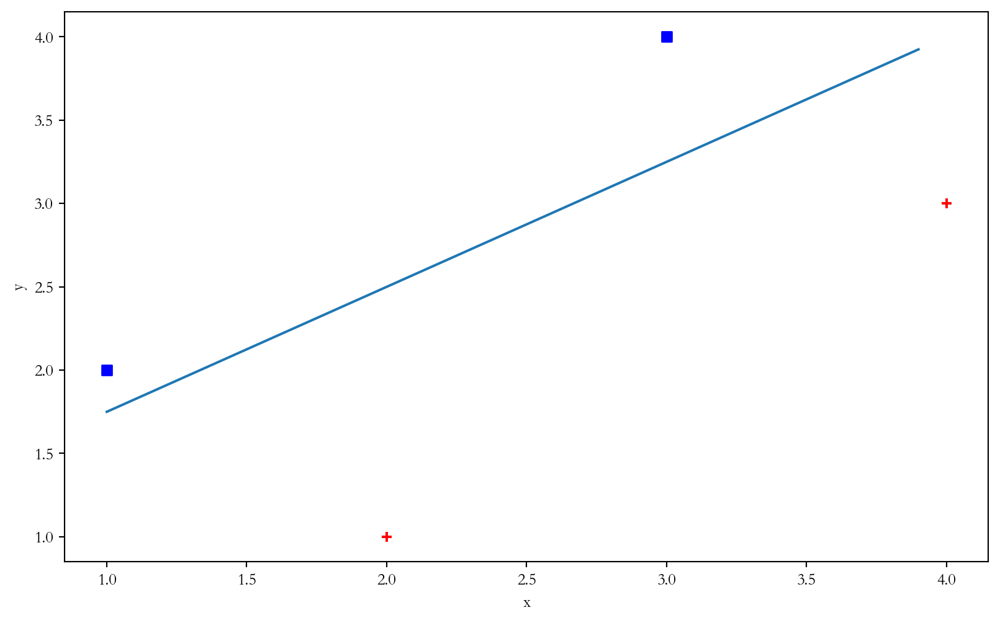
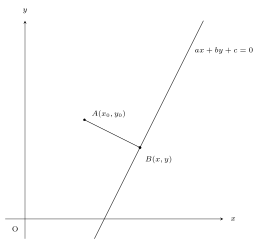
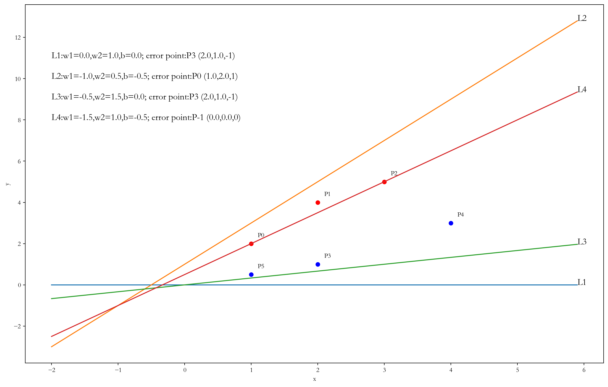

给定一个地图上点的坐标集，红色为一类（标签 \(+1\)），蓝色为另一类（标签 \(-1\)）
数据集可以记为 \(T=\{x_i,y_i,Y_i\}\)，其中 \((x_i,y_i)\) 为坐标，\(Y_i\in\{-1,+1\}\) 为标签
现在想找到一条直线，使得两类点正好在直线的两侧
本讲中，假设这样的直线一定存在（线性可分假设）

回归：模型输出值是连续的，如房价
分类：模型输出值是离散的，如二分类输出 \(0\) 或 \(1\)，或者输出 \(-1\) 或 \(+1\)


借助柯西不等式： \((a^2+b^2)(c^2+d^2) \geqslant (a c+b d)^2\)
证明：
左侧减右侧有
\[\begin{align} &(a^2c^2+a^2d^2+b^2c^2+b^2d^2)-(a^2c^2+2a b c d+b^2d^2)\\=& a^2d^2+2a b c d +b^2c^2\\=&(a d+b c)^2\geqslant 0 \end{align} \]
\[\begin{align} A B^2 &=(x-x_0)^2+(y-y_0)^2 \\ &=\frac{1}{a^2+b^2}((x-x_0)^2+(y-y_0)^2)(a^2+b^2)\\ & \geqslant \frac{1}{a^2+b^2}(a(x-x_0)+b(y-y_0))^2\\ &=\frac{1}{a^2+b^2}(a x+by+c-c-ax_0-by_0)^2\\ &=\frac{1}{a^2+b^2}(ax_0+by_0+c)^2 \end{align} \]
因此 \(A B=\frac{|ax_0+by_0+c| }{\sqrt{a^2+b^2}}\)
每次确定一组参数 \((a,b,c)\) 后，不使用 \(L(a,b,c;M)\)，而是随机挑选一个误分类点 \((x_i,y_i)\)，用 \(loss(a,b,c;x_i,y_i)=-Y_i(ax_i+by_i+c)\) 作为损失函数进行梯度下降
即每次的损失函数可能都不一样，且只考虑一个随机的误分类点造成的损失
三个参数的导数分别为： \[ \begin{cases} loss_{a}(a,b,c;x_i,y_i)=-Y_ix_i\\ loss_{b}(a,b,c;x_i,y_i)=-Y_iy_i\\ loss_{c}(a,b,c;x_i,y_i)=-Y_i \end{cases} \]
对应的参数更新为：（ \(0<\alpha\leqslant 1\) 为学习率或步长） \[ \begin{cases} a=a-loss_{a}(a,b,c;x_i,y_i)=a+\alpha Y_ix_i\\ b=b-loss_{b}(a,b,c;x_i,y_i)=b+\alpha Y_iy_i\\ c=c-loss_{c}(a,b,c;x_i,y_i)=c+\alpha Y_i \end{cases} \]
\[ \begin{align} loss(a',b',c';x_i,y_i)&=-Y_i(a'x_i+b'y_i+c')\\ &=-Y_i((a+\alpha Y_i x_i)x_i+(b+\alpha Y_iy_i)y_i+(c+\alpha Y_i))\\ &=-Y_i(ax_i+by_i+c)-Y_i^2\alpha(x_i^2+y_i^2+1)\\ & < -Y_i(ax_i+by_i+c)=loss(a,b,c;x_i,y_i) \end{align} \]

设训练集 \(\{(x_i,y_i,Y_i)\}\) 是线性可分的，其中标签 \(Y_i\in \{-1,+1\}\) ，训练集大小为 \(m\)
(1)存在满足条件 \((a^*)^2+(b^*)^2+(c^*)^2=1\) 的直线 \(a^*x+b^*y+c^*=0\) 将训练集完全分开；且存在 \(\gamma>0\)，对所有 \(i\) ：\(Y_i(a^* x_i+b^* y_i+c^*)\geqslant \gamma\)
(2)令 \(R=\max_{1\leq i\leq m}\sqrt{x_i^2+y_i^2+1}\)，则算法在训练集上的误分类次数 \(k\) 满足 \(k\leqslant \left(\frac{R}{\gamma}\right)^2\)
证明：(1)显然。 (2)算法从 \((a_0=0,b_0=0,c_0=0)\) 开始.
令 \((a_{k-1},b_{k-1},c_{k-1})\) 是发现第 \(k\) 个误分类实例时参数，则有 \[Y_i(a_{k-1}x_i+b_{k-1}y_i+c_{k-1})<0\]，其中 \((x_i,y_i)\) 是第 \(k\) 个误分类实例。则参数的更新为： \[ \begin{cases} a_k=a_{k-1}+\alpha Y_ix_i\\ b_k=b_{k-1}+\alpha Y_iy_i\\ b^k=b_{k-1}+\alpha Y_i \end{cases} \]
对参数更新等式分别左右同乘 \(a^*,b^*,c^*\)： \[ \begin{cases} a_k a^*=a_{k-1} a^*+\alpha Y_i a^* x_i\\ b_k b^*=b_{k-1} b^*+\alpha Y_i b^* y_i\\ c_k c^*=c_{k-1} c^*+\alpha Y_i c^* \end{cases} \]
将上述三式相加有 \[ a_k a^*+b_k b^*+c_k b^* =a_{k-1} a^*+b_{k-1} b^*+c_{k-1} c^*+\alpha Y_i(a^* x_i+b^* y_i+c^*) \]
由 \(Y_i(a^* x_i+b^* y_i+c^*)\geqslant \gamma\)：
\[ \begin{align} a_k a^*+b_k b^*+c^k c^* &\geqslant a_{k-1} a^*+b_{k-1} c^*+c_{k-1} b^*+\alpha \gamma \\ &\geqslant a_{k-2} a^*+b_{k-2} b^*+c_{k-2} c^*+2\alpha \gamma\\ &\geqslant a_{k-3} a^*+b_{k-3} b^*+c_{k-3} c^*+3\alpha \gamma\\ &\geqslant ...\\ &\geqslant a_0 a^*+b_0 b^*+c_0 c^*+k\alpha \gamma=k\alpha\gamma \end{align} \]
对参数更新等式分别左右平方有：
\[ \begin{cases} a_k^2=a_{k-1}^2+2a_{k-1}\alpha Y_ix_i+\alpha^2 x_i^2 \\ b_k^2=b_{k-1}^2+2b_{k-1}\alpha Y_iy_i+\alpha^2 y_i^2 \\ c_k^2=c_{k-1}^2+2c_{k-1}\alpha Y_i+\alpha^2 \end{cases} \]
\(a_k^2+ b_k^2+c_k^2=a_{k-1}^2+b_{k-1}^2+c_{k-1}^2+2Y_i(a_{k-1}x_i+b_{k-1}y_i+c_{k-1})+\alpha^2(x_i^2+y_i^2+1)\)
由 \(Y_i(a_{k-1}x_i+b_{k-1}y_i+c_{k-1})<0\) 和 \(R=\max_{1\leq i\leq m}\sqrt{x_i^2+y_i^2+1}\)：
\[ \begin{align} a_k^2+ b_k^2+c_k^2 &< a_{k-1}^2+b_{k-1}^2+c_{k-1}^2+\alpha^2R^2\\ &<a_{k-2}^2+b_{k-2}^2+c_{k-2}^2+2\alpha^2R^2\\ &<a_{k-2}^2+b_{k-2}^2+c_{k-2}^2+3\alpha^2R^2\\ &<...\\ &<a_{0}^2+b_{0}^2+c_{0}^2+k\alpha^2R^2=k\alpha^2R^2 \end{align} \]
将前面推导结果起来，并应用柯西不等式：
\[\begin{align} k\alpha\gamma&\leqslant a_k a^*+b_k b^*+c^k c^*\\ &\leqslant (a_k^2+b_k^2+c_k^2)((a^*)^2+(b^*)^2+(c^*)^2)\\ &=a_k^2+b_k^2+c_k^2\\ &\leqslant \sqrt{k}\alpha R\end{align} \]
\(k^2\gamma^2\leqslant k R^2\)，所以有 \[ k\leqslant \left(\frac{R}{\gamma}\right)^2 \]
这说明误分类的次数 \(k\) 是有限的，算法经过有限步可以收敛
已知 \((a^2+b^2)(c^2+d^2) \geqslant (a c+b d)^2\)，求证 \[ (a^2+b^2+c^2)(d^2+e^2+f^2) \geqslant (a d+b e+cf)^2 \]
证明：
由柯西不等式， \(ad+be\leqslant |ad+be|\leqslant \sqrt{(a^2+b^2)(d^2+e^2)}\)
因此：\(((a d+b e)+cf)^2\leqslant (\sqrt{(a^2+b^2)(d^2+e^2)}+cf)\)
再对右侧 \(\sqrt{a^2+b^2}\cdot \sqrt{d^2+e^2}+c\cdot f\) 使用柯西不等式即得证
import pandas as pd
import os
df=pd.read_csv("example.csv") # 读取文件中的数据
data=df.values.tolist() # 把数据转换为列表，列表中的每个元素都是x,y,Y的形式
def finderror(a,b,c): # 在参数a,b,c的情况下，找到一个分类错误的点
for x,y,Y in data: # 遍历所有的数据点
if Y*(a*x+b*y+c)<=0: # 如果分类错误
return x,y,Y # 返回这个点的坐标与标签
return 0,0,0 # 如果没有分类错误的点，返回0,0,0
a,b,c=0,1,0 # 初始化a,b,c
alpha=0.5 # 学习率
cnt=100 # 迭代次数
for i in range(cnt): # 迭代cnt次
x,y,Y=finderror(a,b,c) # 找到一个分类错误的点
if Y==0: # 如果没有分类错误的点
print("迭代了",i,"次") # 输出迭代次数
break # 提前结束迭代
a=a+alpha*Y*x # 更新参数a,b,c
b=b+alpha*Y*y
c=c+alpha*Y
print(a) # 输出最终的参数a,b,c
print(b)
print(c)from sklearn.linear_model import Perceptron
df=pd.read_csv("ditu.csv") # 读取文件中的数据
model=Perceptron() # 默认参数调用模型
# model=Perceptron(max_iter=100000,n_iter_no_change=70000) # 强制跑上万次迭代
x=df[["jingdu","weidu"]]
y=(df["label"])
model.fit(x,y)
print(model.coef_,model.intercept_) # 输出模型参数a,b,c
print("socre in training set: ",model.score(x,y))
# 模型结果在训练集上的得分（确定的比例），如何能实现线性可分，则得分应为1，即100%